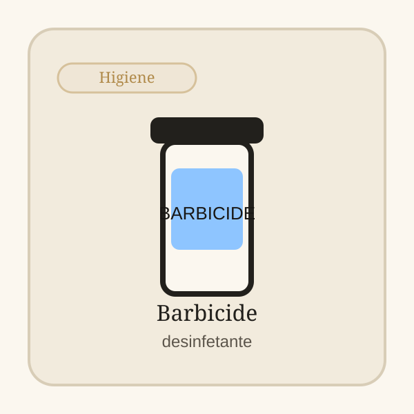

Categoria da loja
Manutenção de máquinas
Produtos e consumíveis para prolongar a vida útil da máquina e reduzir falhas evitáveis. Os produtos principais aparecem logo abaixo e os guias ficam no fim para aprofundares só se precisares.
Spray Beardburys 5 em 1
Spray 5 em 1 para limpeza rápida e manutenção diária de máquinas.
Ver detalhes
Organizador de Bancada Colcolo
Organizador de bancada para manter ferramentas acessíveis e arrumadas.
Ver detalhesLê antes de comprar
Tens 2 guias nesta categoria para te ajudar a escolher o produto certo.
Top Escolhas
Produtos que vale a pena abrir primeiro
Os produtos aparecem logo abaixo do título para chegares mais rápido à compra.


Barbicide Recipiente Desinfetante
Reforca percecao de higiene no posto
Como escolher
Como escolher nesta categoria
Começa pelo cenário mais parecido com o teu uso: melhor para limpeza rápida, melhor para organização, melhor para higiene de serviço. Depois compara duas ou três opções e escolhe a que encaixa melhor no teu uso real.
- Se queres resolver rápido, abre primeiro duas ou três opções fortes e só depois vais ao detalhe.
- Se vais usar com frequência, dá mais peso a conforto, consistência e manutenção do que ao número de extras.
- No fim da página tens artigos ligados a esta categoria para tirar dúvidas antes de clicar num produto.
Melhor para
Comparação rápida
Quatro atalhos para chegares ao tipo de produto certo.
Melhor para limpeza rápidaVer recomendação
Spray Beardburys 5 em 1
Spray 5 em 1 para limpeza rápida e manutenção diária de máquinas.
Melhor para organizaçãoVer recomendação
Organizador de Bancada Colcolo
Organizador de bancada para manter ferramentas acessíveis e arrumadas.
Melhor para higiene de serviçoVer recomendação
Rolos de Pescoço Eurostil
Rolos descartáveis para reforçar higiene e conforto do cliente.
Revista OndeCortar
Ver revistaGuias para tirar dúvidas nesta categoria
A revista aprofunda diferenças, erros comuns e critérios de compra antes de voltares à loja.
Perguntas frequentes
Com que frequência devo limpar a máquina?
Mais vale uma rotina curta e consistente do que grandes limpezas raras.
Um spray 5 em 1 chega para tudo?
Ajuda bastante, mas não substitui organização, escovagem e cuidado básico com armazenamento.
Antes de comprar
Compara menos produtos, mas melhores
Recomendações curtas, comparação rápida e acesso direto para Amazon.es com links identificados.
Transparência: Alguns links nesta página são links de afiliado. O OndeCortar pode receber comissão por compras elegíveis.